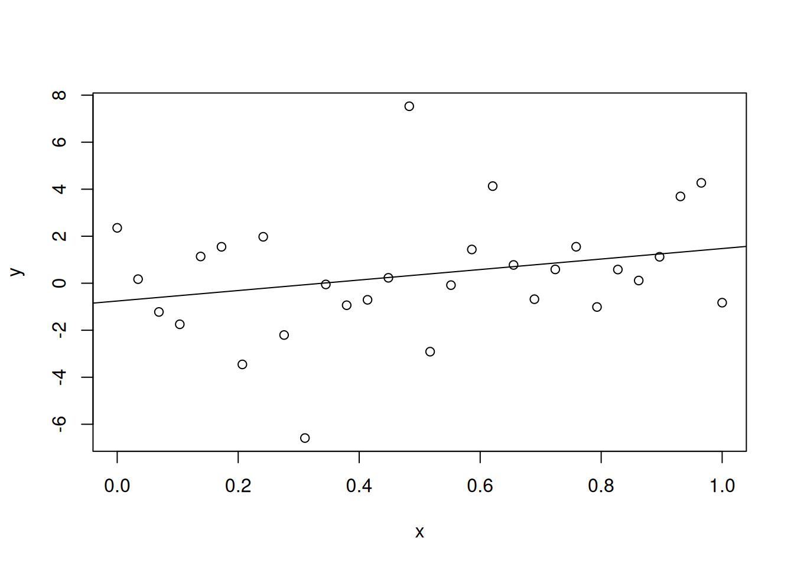
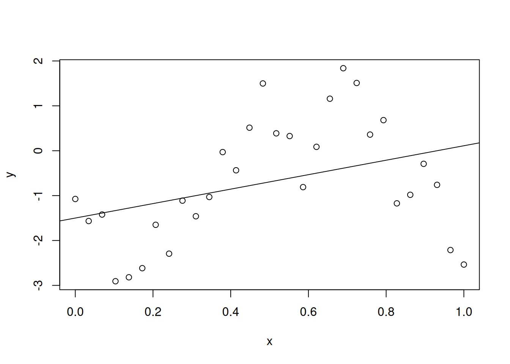
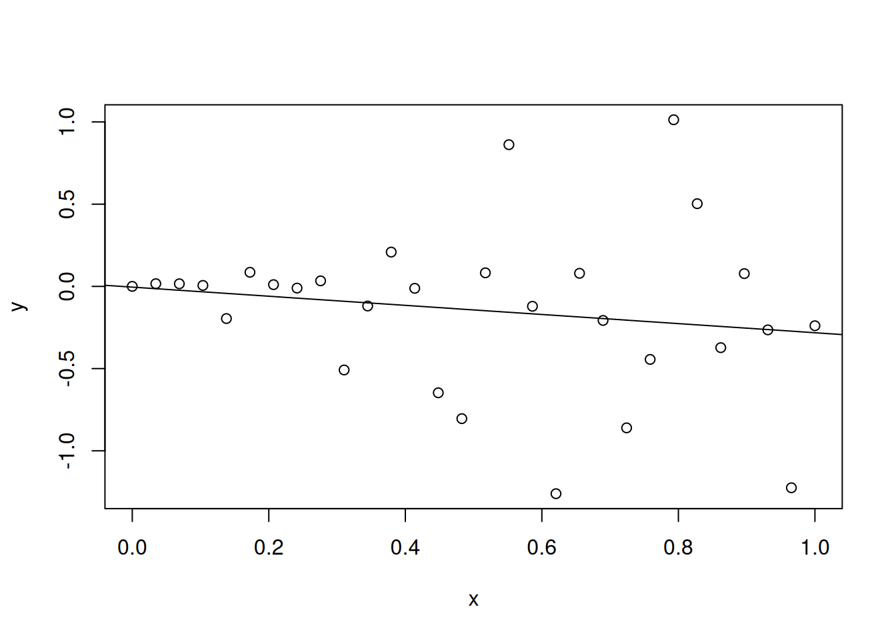
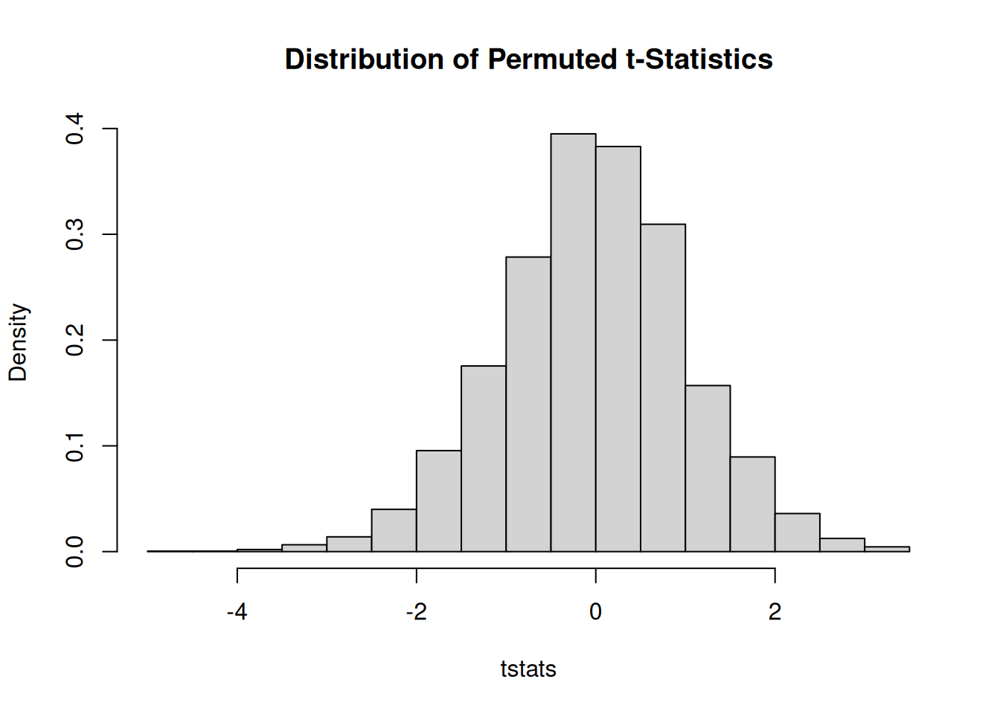

set.seed(101)n <-30n_simulations <-4000x <-seq(from =0, to =1, length.out = n)y <- x +rcauchy(n = n, location =0, scale =1)lm_q1a <-lm(y ~ x)summary(lm_q1a)
Call:
lm(formula = y ~ x)
Residuals:
Min 1Q Median 3Q Max
-6.5235 -1.1795 -0.1967 1.4101 7.2071
Coefficients:
Estimate Std. Error t value Pr(>|t|)
(Intercept) -0.7567 0.9167 -0.826 0.416
x 2.2328 1.5742 1.418 0.167
Residual standard error: 2.573 on 28 degrees of freedom
Multiple R-squared: 0.06703, Adjusted R-squared: 0.03371
F-statistic: 2.012 on 1 and 28 DF, p-value: 0.1671
Show the code
summary(lm_q1a)$coef[2, ]
Estimate Std. Error t value Pr(>|t|)
2.2327980 1.5741752 1.4183923 0.1671113
Show the code
plot(x, y)abline(lm_q1a)

Show the code
slope <-matrix(data =NA, nrow = n_simulations, ncol =2)for (i in1:n_simulations) { y <- x +rcauchy(n = n, location =0, scale =1) lm_q1b <-lm(y ~ x) slope[i, 1] <-summary(lm_q1b)$coef[2, 1] # First column contains estimates slope[i, 2] <-summary(lm_q1b)$coef[2, 2] # Second column contains std errors}
Show the code
summary(slope[, 1])
Min. 1st Qu. Median Mean 3rd Qu. Max.
-4203.4762 -2.0135 0.8765 1.4804 3.7912 7815.6476
Show the code
summary(slope[, 2])
Min. 1st Qu. Median Mean 3rd Qu. Max.
0.5636 2.2580 3.9197 21.2135 8.2978 4509.8138
Although the median of \(0.8765\) and the mean of \(1.4804\) align reasonably well with the expected value of one, the minimum value of \(-4203.4762\) and the maximum value of \(7815.6476\) indicate the presence of extreme outlier estimates.
The estimated standard errors display a large mean of \(21.2135\) and presence of extremely large values with a maximum ceiling of \(4509.8138\).
The theoretical properties of the least squares estimator require the error distribution to have finite mean and variance, but the Cauchy distribution violates these conditions, leading to unstable and sometimes extreme estimation results.
In statistics, the Gauss–Markov theorem states that the ordinary least squares (OLS) estimator has the lowest sampling variance within the class of linear unbiased estimators, if the errors in the linear regression model are uncorrelated, have equal variances and expectation value of zero. The errors do not need to be normal, nor do they need to be independent and identically distributed (only uncorrelated with mean zero and homoscedastic with finite variance).
Long-tailed error distributions are problematic because most simulated observations appear ordinary, creating an impression of stability. However, rare but severe outliers inevitably occur, and the estimator is not robust enough to handle these extreme values.
Q2
q2a
The problem uses a Student’s t-distribution with three degrees of freedom. The formula for the variance of a t-distribution with \(\nu\) degree(s) of freedom is
By dividing the generated numbers by \(\sqrt{3}\), we retain the shape of the t-distribution (heavier tails, where the probability mass in the tails is controlled by the parameter \(\nu\)). For \(\nu = 1\), the Student’s t-distribution \(t_v\) becomes the standard Cauchy distributions, which has very fat tails; whereas for \(\nu \rightarrow \infty\), it converges to the standard normal distribution \(N (0, 1)\)
Show the code
set.seed(37)n <-30n_simulations <-4000x <-seq(from =0, to =1, length.out = n)slope <-matrix(data =NA, nrow = n_simulations, ncol =4)for (i in1:n_simulations) { y <-rt(n = n, df =3) /sqrt(3) lm_q2a <-lm(y ~ x) slope[i, ] <-summary(lm_q2a)$coef[2, ]# slope[i, 1] <- summary(lm_q2a)$coef[2, 1] # First column contains estimates# slope[i, 2] <- summary(lm_q2a)$coef[2, 2] # Second column contains std errors# slope[i, 3] <- summary(lm_q2a)$coef[2, 3] # Third column contains t values# slope[i, 4] <- summary(lm_q2a)$coef[2, 4] # Fourth column contains p-values}summary(lm_q2a)$coef[2, ]
Estimate Std. Error t value Pr(>|t|)
-0.1193180 0.3959897 -0.3013158 0.7654001
Show the code
plot(x, y)abline(lm_q2a)
q2b
Show the code
mean(slope[, 1])
[1] 0.01451257
The mean of our simulated estimates, \(\bar{\hat{\beta_1}} = 0.0145\), is close to the true theoretical value of \(\beta_1 = 0\) and the theoretical expectation \(E(\hat{\beta_1}) = 0\).
The standard deviation of \(\hat{\beta_1} = 0.6064\), which is close to the square root of the theoretical variance that was computed with Equation 2.21, \(\operatorname{Var}(\hat{\beta}) = (X^T X)^{-1} \sigma^2\), on page 57.
Show the code
mean(slope[, 2])
[1] 0.5622422
The mean of simulated \(SE(\hat{\beta_1}) = 0.5622\) does not agree with computed standard deviation of \(\hat{\beta_1} = 0.6064\).
In fact, it reported a value less than our previously computed result.
Remember, \(0.6064\) is the actual standard deviation generated from our estimates and \(0.5622\) is the standard errors reported by the lm() function in each run. Take note that lm() assumes that the errors are normally distributed and does not have outliers (However, it is more precise to say that Normal distribution has “thin tails” which suggests outliers are possible but rare).
Now, a skeptic might ask: “Maybe\(0.5622\) is just different from \(0.6064\) because of random chance (simulation noise).”
To address this, we compute a \(95\%\) confidence interval:
In this specific case, the null hypothesis for the above test was: “The lm() model’s reported error is accurate (equal to 0.6064)”
The confidence interval rests between \(0.5559\) and \(0.5686\) of which \(0.6064\) is effectively far below the actual standard deviation. The difference between the “Reported Error and the”Actual Error” is statistically significant, proving that when errors have heavy tails (\(t_3\)), the standard linear model underestimates the uncertainty.
If we use standard least squares regression on data that has heavy-tailed errors (\(t_3\)):
Our slope estimates are still approximately unbiased (close to zero).
But our standard errors are too small (biased downwards).
This meant that our confidence intervals will be too narrow and we will claim statistical significance too often, as our p-values will be artificially low due to presence of outlier(s).
q2d
Show the code
mean(slope[, 4] <0.05)
[1] 0.042
q2e
Initially, we generated the data with the assumption that there is no relationship to be found.
Null hypothesis: \(\beta = 0\).
If the model finds a “statistically significant” relationship, it is making a Type I error, or false positive error (Defined as the incorrect rejection of the true null hypothesis in statistical hypothesis testing).
If we set our confidence level to \(95\%, \quad (\alpha = 0.05)\), we implicitly agreed to accept a \(5\%\) error rate.
That is, we expect to be wrong \(5\%\) of the time (nominal size of the error rate).
In \(4.2\%\) of our \(4000\) simulations, the model claimed that the slope was statistically significant (actual size of the error rate).
Since the figures are close to each another, the hypothesis test is behaving exactly as we initially assumed.
Do take note, that in part (c), we have proved that the standard errors were biased downwards.
Standard errors are too small \(\longrightarrow\) t-values are too big \(\longrightarrow\) p-values are too small \(\longrightarrow\) rejection rate should be high.
However, the result here indicates that despite the errors being non-normal (\(t_3\)) and the standard errors being biased, the t-test is remarkly robust as it managed to preserve the correct Type I error rate.
Estimate Std. Error t value Pr(>|t|)
1.61061670 0.77926910 2.06682994 0.04810891
Show the code
plot(x, y)abline(lm_q3a)

Yes, the correlated errors are apparent.
q3b
Show the code
mean(slope[, 1])
[1] -0.01671882
The mean of our simulated estimates, \(\bar{\hat{\beta_1}} = -0.0167\), is close to the true theoretical value of \(\beta_1 = 0\) and the theoretical expectation \(E(\hat{\beta_1}) = 0\).
q3c
Show the code
sd(slope[, 1])
[1] 3.461398
SD of the simulated \(\hat{\beta_1}\) is \(3.4614\).
Show the code
mean(slope[, 2])
[1] 0.8354084
Mean of simulated \(\SE(hat{\beta_1})\) is \(0.8354\).
The estimated standard error generated by lm() substantially underestimate the true standard error.
q3d
Show the code
round(mean(slope[, 4] <0.05) *100, 1)
[1] 62.6
In \(62.6\%\) of our \(4000\) simulations, the model claimed that the slope was statistically significant even though the null hypothesis is true.
This is a consequence of the underestimated SE for \(\beta_1\).
The lm() function does not know about the correlation and calculates a standard error that is far too small as it sees the thirty datapoints and assumes each and every one of them provides a fresh, independent piece of information.
Standard errors are too small \(\longrightarrow\) t-values are too big \(\longrightarrow\) p-values are too small \(\longrightarrow\) rejection rate should be high.
q3e
In statistics, a spurious relationship or spurious correlation is a mathematical relationship in which two or more events or variables are associated but not causally related, due to either coincidence or the presence of a certain third, unseen factor (referred to as a “common response variable”, “confounding factor”, or “lurking variable”).
In \(62.6\%\) of our \(4000\) simulations, the model claimed that the slope was statistically significant even though the null hypothesis is true.
This is a consequence of the underestimated SE for \(\beta_1\).
The lm() function does not know about the correlation and calculates a standard error that is far too small as it sees the thirty datapoints and assumes each and every one of them provides a fresh, independent piece of information.
Standard errors are too small \(\longrightarrow\) t-values are too big \(\longrightarrow\) p-values are too small \(\longrightarrow\) rejection rate should be high.
This time, unlike the previous question, we observed that when errors are strongly correlated, inference to a divergence from the uncorrelated errors assumption becomes inaccurate.
Q4
q4a
To enforce the requirement “SD proportional to\(x\)”, we multiply the standard deviation with \(x\) such that as \(x\) gets larger, the spread also get larger
Show the code
set.seed(37)n <-30n_simulations <-4000x <-seq(from =0, to =1, length.out = n)slope <-matrix(data =NA, nrow = n_simulations, ncol =4)for (i in1:n_simulations) { y <-rnorm(n = n, mean =0, sd = x *1) lm_q4a <-lm(y ~ x) slope[i, ] <-summary(lm_q4a)$coef[2, ]}summary(lm_q4a)$coef[2, ]
Estimate Std. Error t value Pr(>|t|)
-0.2774077 0.3058648 -0.9069618 0.3721666
Show the code
plot(x, y)abline(lm_q4a)

Yes, as \(x\) increases, the dispersion becomes much more apparent. In other words, the data exhibits clear heteroscedasticity.
q4b
Show the code
round(mean(slope[, 1]), 4)
[1] -0.0027
The mean of our simulated estimates, \(\bar{\hat{\beta_1}} = -0.0027\), is close to the true theoretical value of \(\beta_1 = 0\) and the theoretical expectation \(E(\hat{\beta_1}) = 0\).
q4c
Show the code
sd(slope[, 1])
[1] 0.3960678
The standard deviation of the simulated \(\hat{\beta_1}\) is \(0.3961\).
Show the code
mean(slope[, 2])
[1] 0.3502269
The mean of the simulated \(SE(hat{\beta_1})\) is 0.3502269, which is slightly smaller than standard deviation of the simulated \(\hat{\beta_1}\). Thus, it underestimates the true standard error.
q4d
Show the code
round(mean(slope[, 4] <0.05) *100, 1)
[1] 8.2
In 8.2% of our 4000 simulations, the model claimed that the slope was statistically significant even though the null hypothesis is true.
This is a consequence of the underestimated standard error for \(\beta_1\).
The lm() function assumes homoscedasticity. It treats the high-variance data points (large \(x\)) as having the same precision as the low-variance data points. Because it fails to account for the extra noise introduced as \(x\) increases, the standard error formula yields a value that is too small.
Standard errors are too small \(\longrightarrow\) t-values are too big \(\longrightarrow\) p-values are too small \(\longrightarrow\) rejection rate should be high.
Q5
q5a
Show the code
edf <-data.frame( y <-c(1.21, 1.13, 1.42, 1.01, 1.11, 0.94, 1.23, 1.04), g <-c(0, 0, 0, 0, 1, 1, 1, 1))
Show the code
lm_q5a <-lm(y ~ g, data = edf)lm_q5a_summary <-summary(lm_q5a)lm_q5a_summary
Call:
lm(formula = y ~ g, data = edf)
Residuals:
Min 1Q Median 3Q Max
-0.18250 -0.08188 -0.01125 0.06000 0.22750
Coefficients:
Estimate Std. Error t value Pr(>|t|)
(Intercept) 1.19250 0.07469 15.967 3.83e-06 ***
g -0.11250 0.10562 -1.065 0.328
---
Signif. codes: 0 '***' 0.001 '**' 0.01 '*' 0.05 '.' 0.1 ' ' 1
Residual standard error: 0.1494 on 6 degrees of freedom
Multiple R-squared: 0.159, Adjusted R-squared: 0.01885
F-statistic: 1.134 on 1 and 6 DF, p-value: 0.3278
We use combinations instead of permutations because order within the group does not matter, the results are identical regardless of whether group 1 is defined as \(\{1, 3, 5, 9\}\) or \(\{9, 5, 1, 3\}\). Using combinations reduces the computational load significantly without losing information.
q5d
Show the code
fstats <-numeric(ncol(allcomb))for (i in1:ncol(allcomb)) { col_i <- allcomb[, i] selected_y_based_on_col_i <-c(edf$y[col_i], edf$y[-col_i]) # The first 4 items belong to g = 0, the rest belong to g = 1 fstats[i] <-summary(lm(selected_y_based_on_col_i ~ edf$g))$fstatistic[1]}
q5e
Show the code
mean(fstats > lm_q5a_summary$fstatistic[1])
[1] 0.3714286
As discussed in section 4.3, since the p-values computed based on the assumption of normal errors and those based on permutations (in this case, by means of combinations) are so close, many would prefer the normal assumption-based tests because they are quicker and easier to compute while the latter approach requires more work to compute despite making fewer assumptions.
Q6
q6a
Show the code
data(happy, package ="faraway")lm_q6a <-lm(happy ~ ., data = happy)summary(lm_q6a)
Call:
lm(formula = happy ~ ., data = happy)
Residuals:
Min 1Q Median 3Q Max
-2.7186 -0.5779 -0.1172 0.6340 2.0651
Coefficients:
Estimate Std. Error t value Pr(>|t|)
(Intercept) -0.072081 0.852543 -0.085 0.9331
money 0.009578 0.005213 1.837 0.0749 .
sex -0.149008 0.418525 -0.356 0.7240
love 1.919279 0.295451 6.496 1.97e-07 ***
work 0.476079 0.199389 2.388 0.0227 *
---
Signif. codes: 0 '***' 0.001 '**' 0.01 '*' 0.05 '.' 0.1 ' ' 1
Residual standard error: 1.058 on 34 degrees of freedom
Multiple R-squared: 0.7102, Adjusted R-squared: 0.6761
F-statistic: 20.83 on 4 and 34 DF, p-value: 9.364e-09
Only the predictor love was statistically significant at the \(1\%\) level. The predictor work was significant at the \(5\%\) level, but not at the \(1\%\) level.”
q6b
Show the code
table(happy$happy)
2 3 4 5 6 7 8 9 10
1 1 4 5 2 8 14 3 1
The summary shows the response variable is discrete, consisting only of integers. Since linear regression assumes a continuous response to generate normally distributed errors, this assumption is questionable here.
q6c
Show the code
set.seed(37)n_repetitions <-4000tstats <-numeric(n_repetitions)for (i in1:n_repetitions) { lm_q6c <-lm(happy ~sample(money) + sex + love + work, data = happy) tstats[i] <-summary(lm_q6c)$coef[2, 3]}mean(abs(tstats) >abs(summary(lm_q6a)$coef[2, 3]))
[1] 0.08125
The outcome returns 0.08125, which is very close to the observed normal-based p-value of 0.0749.
q6d
Show the code
hist(tstats, freq =FALSE, main ="Distribution of Permuted t-Statistics")

q6e
Show the code
hist(tstats, freq =FALSE, main ="Distribution of Permuted t-Statistics")grid <-seq(-3, 3, length =300)lines(grid, dt(grid, 34))